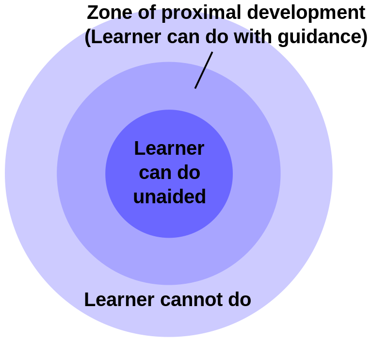
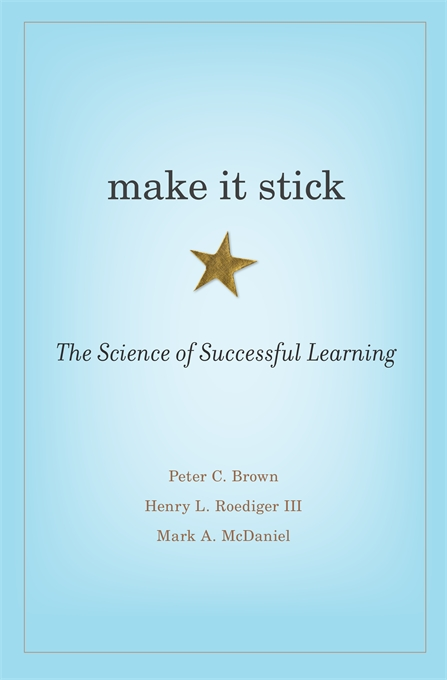

Learning Programming
Trey Hunner / @treyhunner
Growth Mindset
- Growth mindset: you can improve your skills with effort
- Recognize that struggling helps you learn
- Make sure you struggle and know that it helps
- "If you think you can or can’t, you are right."

Active Retrieval
- Learning happens from retrieval, not consumption
- Quizzing yourself is more effective than re-reading
- Quiz yourself early and quiz yourself often
Active Retrieval Example
- Try to solve a programming exercise
- Don't look at the exercise for at least 24 hours
- Look at solutions for the exercise and reflect on them
- Don't look at the exercise for at least 24 hours
- Try to solve the exercise again and repeat from step 2
Interleaved Practice
- Blocked practice: practice one skill repeatedly
- Interleaved practice: work on multiple skills in parallel
- Blocking feels effective, but interleaving is effective
- Mix together different skills when practicing
Spaced Practice
- don't cram: space out your practicing
- take breaks, go for a walk
- pause in the middle of learning topics
Elaboration
- Elaboration: describing an idea in your own words
- Try explaining an idea to someone else in simple terms
- Give a lightning talk on something you learned recently
- Make connections between ideas whenever possible
Recap: How to Learn
- Retrieve: quiz yourself as often as possible
- Growth mindset: know that struggling helps
- Interleave: practice different skills at the same time
- Spacing: remember to take breaks
- Elaborate: make connections between different ideas
